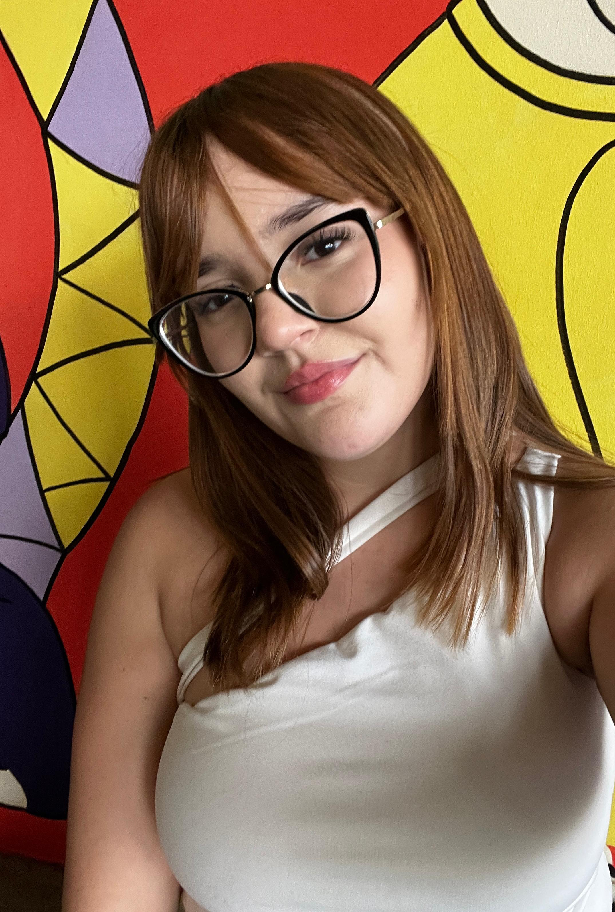

Desarrollo de software
Estudiante en Riwi
Hola, bienvenida/o a mi espacio
Estudiante de desarrollo de software en Riwi, con muchas ganas de aprender y seguir superándome cada día.
Visita mi GitHub
Aprendiendo, creando y creciendo
Un poco sobre mí
Soy estudiante de desarrollo de software en Riwi y estoy construyendo mi camino en el mundo del desarrollo. Este portafolio irá creciendo junto con mis aprendizajes y proyectos.
Mi camino
Estudiante en Riwi
Estudiante en la UNAD
Egresada SENA
Fundación Rofé y alianza con la alcaldía de Medellín
Practicando y aprendiendo
Muy pronto verás mis proyectos aquí
Estoy trabajando en nuevas ideas. Mientras tanto, puedes encontrarme en GitHub.
Ir a GitHubSi quieres ponerte en contacto conmigo, escríbeme.
yepesluu@gmail.com